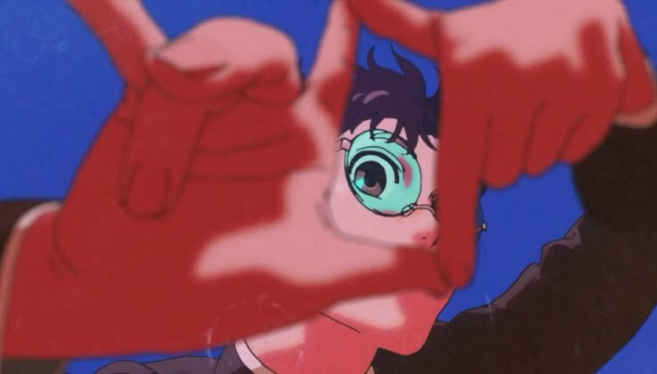
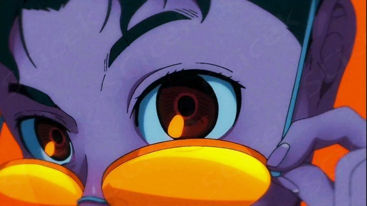
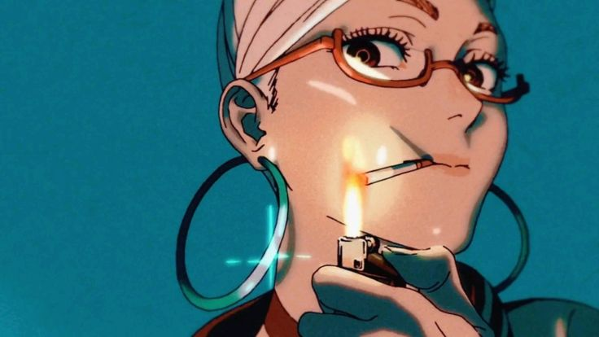
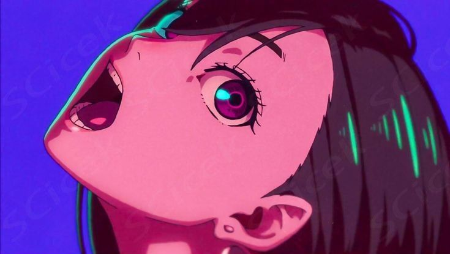
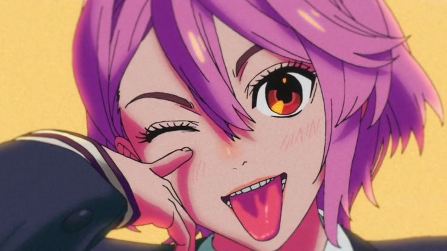
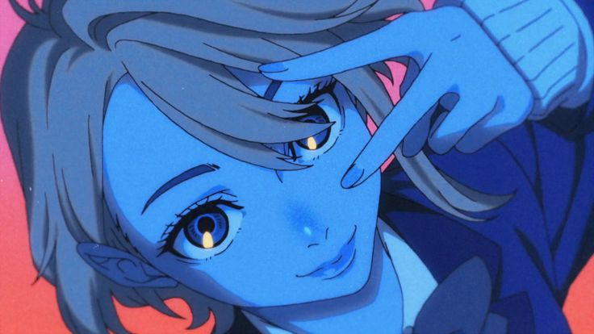
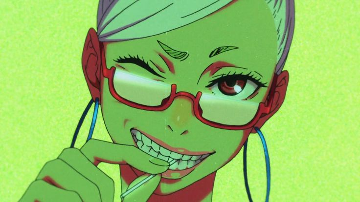
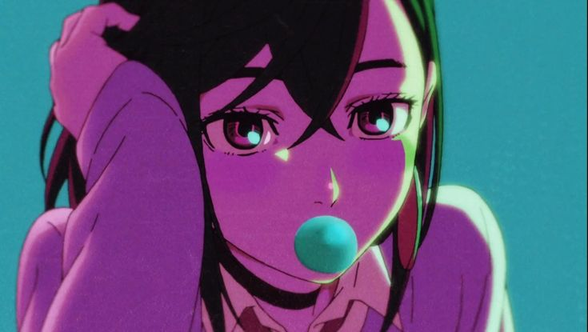
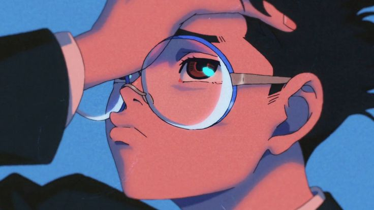

Lumina Deck
The Kinematic Visual Suite
Momentum-driven, parallax-infused visuals for the Dandadan archive.

Okarun · Focus Frame

Takakura · Lens Shift

Ayase · Ignition

Momo · Neon Scream

Aira · Emerald Glance

Aira · Playful Wink

Ayase · Electric Bloom

Momo · Midnight Pop

Okarun · Frame Break